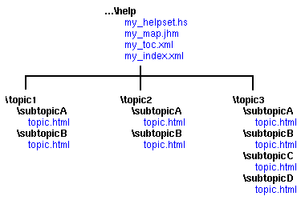

When a user initiates a full-text search, the JavaHelp
system full-text search engine searches a special
search database to find matches quickly. You use the
jhindexer command to create the search
database for your help topics.
The search database created by the jhindexer
command consists of six files located in a folder named
JavaHelpSearch. As described in Setting Up a JavaHelp System, the
search database folder is usually located in the same
folder as the rest of the help metadata files.
The following example describes how to use the
jhindexer command in its simplest form. For
details about other features of the jhindexer
command, see The
jhindexer Command.
The example assumes that your help information is arranged in the following hierarchy:

 To create a
full-text search database:
To create a
full-text search database:
...\help folder the current folder
jhindexer
command, as follows:
jhindexer topic1 topic2 topic3
The jhindexer command is located in the javahelp\bin
folder of the JavaHelp system release.
|
jhindexer command recursively descends the help hierarchy, indexing
all the files it encounters. When finished, jhindexer places the search
database files in a folder named JavaHelpSearch in the current folder:

 To verify the validity
of a full-text search database:
To verify the validity
of a full-text search database:
...\help folder the current folder
JavaHelpSearch folder as the argument to the jhsearch command:
jhsearch JavaHelpSearch
 See also:
See also:
jhindexer Command
jhsearch Command